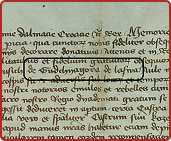

Start
Your browser does not support the video tag.

Pritisni tačke (
) na vremenskoj crti za više informacija.
1 • 7
2 • 7
3 • 7
4 • 7
5 • 7
6 • 7
7 • 7
1.
Fra Jako Baltić
1860 - 1864
2.
Fra Anto Gutić
1864 - 1865
3.
Fra Marko Barać
1865 - 1871
4.
Fra Stjepan Marković
1871 - 1875
5.
Fra Marijan Marković
1875 - 1878
6.
Fra Nikola Lovrić
1878 - 1882
7.
Fra Jako Selak
1882 - 1886
8.
Fra Jako Gržić
1886 - 1889
9.
Fra Jozo Ćurić
1889 - 1895
10.
Fra Filip Dujmušić
1895 - 1898
11.
Fra Filip Jurišić
1898 - 1900
12.
Fra Anto Matković
1900 - 1902
13.
Fra Jako Matković
1902 - 1905
14.
Fra Jako Jurić
1905 - 1908
15.
Fra Jako Matković
1908 - 1909
16.
Fra Marijan Duić - Bežić
1909 - 1912
17.
Fra Alojzije Perčinlić
1912 - 1913
18.
Fra Jako Selak
1913 - 1916
19.
Fra Franjo Stjepanek
1916 - 1917
20.
Fra Anto Babić
1917 - 1918
21.
Fra Jako Jurić
1918 - 1919
22.
Fra Rudolf Jablanović
1919 - 1920
23.
Fra Ivo Marković - Mišić
1920 - 1923
24.
Fra Ladislav Fišić
1923 - 1927
25.
Fra Zorislav Čolić
1927 - 1930
26.
Fra Viktor Slišković
1930 - 1931
27.
Fra Ladislav Fišić
1931 - 1935
28.
Fra Branko Krilić
1935 - 1938
29.
Fra Anto Strukar
1938 - 1942
30.
Fra Ivo Marković - Matoica
1942 - 1946
31.
Fra Miroslav Džaja
1947 - 1947
32.
Fra Eduard Lončar
1947 - 1952
33.
Fra Alojzije Atlija
1952 - 1954
34.
Fra Ivo Marković - Matoica
1954 - 1961
35.
Fra Mato Matošević
1961 - 1967
36.
Fra Stanko Karin
1967 - 1970
37.
Fra Drago Kolar
1970 - 1979
38.
Fra Branko Neimarević
1979 - 1985
39.
Fra Franjo Križanac
1985 - 1991
40.
Fra Stjepan Neimarević
1991 - 1994
41.
Fra Franjo Križanac
1994 - 2000
42.
Fra Slavko Petrušić
2000 - 2006
43.
Fra Jozo Marinčić
2006 - 2009
44.
Fra Zoran Livančić
2009 - 2012
45.
Fra Drago Pranješ
2012 - 2022
46.
Fra Davor Petrović
2022 - 20....
Impressum
Adisa Lepić
fra Velimir Valjan
fra Pero Vrebac
Andrew Lawler
Selma Đuliman
fra Dario Laštro
fra Fabio Badrov
Ivo Dragičević
HR
/
EN